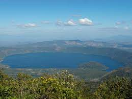
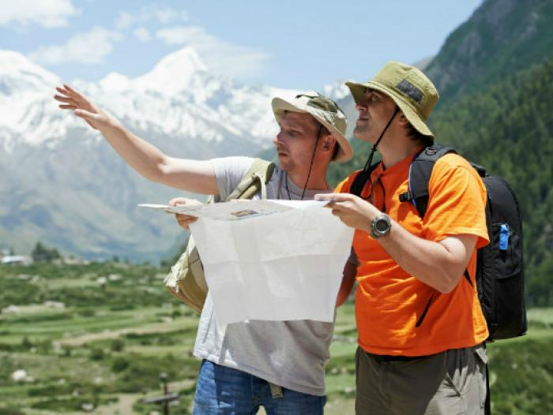

¡El Lago de Coatepeque te espera!
El lago de Coatepeque, es uno de los lugares turísticos más hermosos que puedes visitar en El Salvador. Cuenta con una gran extensión en la que puedes practicar varios deportes, además de su belleza cuenta con una excelente vista panorámica hacia el volcán de Santa Ana y el cerro verde.
Atracciones turísticas del lugar
Encuentra restaurantes, tiendas de souvenirs y hoteles en la zona
| Lugar | Horario de atención |
|---|---|
| Hotel Captain Morgan | Lunes a Domingo - Servicio 24h |
| Hotel Cardedeu | Lunes a Domingo - De 8AM a 9PM |
| Restaurante La Octava Maravilla | Lunes a Domingo - Servicio 24h |
| Restaurante El Faro del Lago | Lunes a Domingo - De 11AM a 8PM |
Visitas guiadas al Lago de Coatepeque
¿Deseas conocer el Lago de Coatepeque de la mano de un guía experto? Llena el formulario a continuación para recibir más información